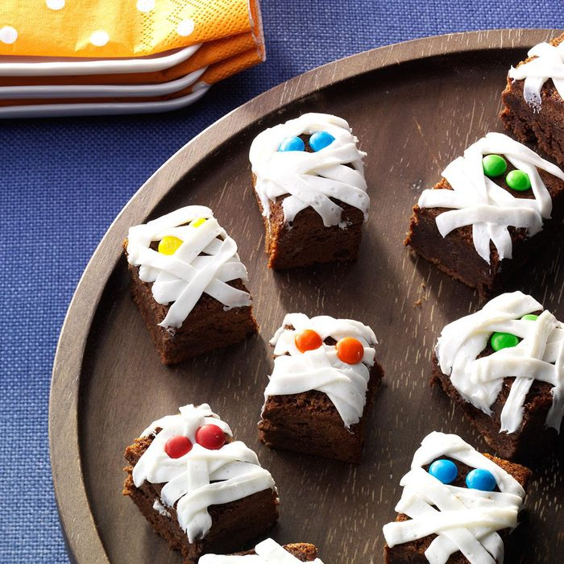

Mummy Brownies

Ingredients
- 1/2 cup butter, cubed
- 4 ounces unsweetened chocolate, chopped
- 4 large eggs, room temperature
- 2 cups sugar
- 1 teaspoon vanilla extract
- 1/2 cup all-purpose flour
- 1/2 teaspoon salt
- 2 cups chopped pecans, optional
- 2 cans (16 ounces each) vanilla frosting
- Candy eyes
Steps
- Preheat oven to 350°. Line two 8-in. square baking pans with foil, letting ends extend up sides; grease foil. In a microwave, melt butter and chocolate; stir until smooth. Cool slightly. In a large bowl, beat eggs and sugar. Stir in vanilla and chocolate mixture. In another bowl, mix flour and salt; gradually add to chocolate mixture, mixing well. If desired, stir in pecans.
- Spread into prepared pans. Bake 35-40 minutes or until a toothpick inserted in center comes out clean. Cool completely in pan on a wire rack.
- Lifting with foil, remove brownies from pans. Cut into bars. Using a No. 46 pastry tip, pipe frosting over brownies. Decorate with candy eyes.
Nutricion Facts
1 brownie: 234 calories, 10g fat (5g saturated fat), 31mg cholesterol, 130mg sodium, 35g carbohydrate (29g sugars, 1g fiber), 2g protein.